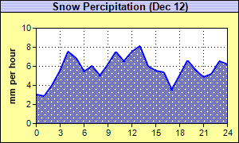

This example demonstrates using a pattern for filling the area in an area chart, together with a number of chart formatting features.
The following is the command line version of the code in "cppdemo/patternarea". The MFC version of the code is in "mfcdemo/mfcdemo". The Qt Widgets version of the code is in "qtdemo/qtdemo". The QML/Qt Quick version of the code is in "qmldemo/qmldemo".
#include "chartdir.h"
int main(int argc, char *argv[])
{
// The data for the area chart
double data[] = {3.0, 2.8, 4.0, 5.5, 7.5, 6.8, 5.4, 6.0, 5.0, 6.2, 7.5, 6.5, 7.5, 8.1, 6.0, 5.5,
5.3, 3.5, 5.0, 6.6, 5.6, 4.8, 5.2, 6.5, 6.2};
const int data_size = (int)(sizeof(data)/sizeof(*data));
// The labels for the area chart
const char* labels[] = {"0", "1", "2", "3", "4", "5", "6", "7", "8", "9", "10", "11", "12",
"13", "14", "15", "16", "17", "18", "19", "20", "21", "22", "23", "24"};
const int labels_size = (int)(sizeof(labels)/sizeof(*labels));
// Create a XYChart object of size 300 x 180 pixels. Set the background to pale yellow
// (0xffffa0) with a black border (0x0)
XYChart* c = new XYChart(300, 180, 0xffffa0, 0x000000);
// Set the plotarea at (45, 35) and of size 240 x 120 pixels. Set the background to white
// (0xffffff). Set both horizontal and vertical grid lines to black (&H0&) dotted lines (pattern
// code 0x0103)
c->setPlotArea(45, 35, 240, 120, 0xffffff, -1, -1, c->dashLineColor(0x000000, 0x000103),
c->dashLineColor(0x000000, 0x000103));
// Add a title to the chart using 10pt Arial Bold font. Use a 1 x 2 bitmap pattern as the
// background. Set the border to black (0x0).
int titleBg[] = {0xb0b0f0, 0xe0e0ff};
c->addTitle("Snow Percipitation (Dec 12)", "Arial Bold", 10)->setBackground(c->patternColor(
IntArray(titleBg, 2), 2), 0x000000);
// Add a title to the y axis
c->yAxis()->setTitle("mm per hour");
// Set the labels on the x axis.
c->xAxis()->setLabels(StringArray(labels, labels_size));
// Display 1 out of 3 labels on the x-axis.
c->xAxis()->setLabelStep(3);
// Add an area layer to the chart
AreaLayer* layer = c->addAreaLayer();
// Load a snow pattern from an external file "snow.png".
int snowPattern = c->patternColor("snow.png");
// Add a data set to the area layer using the snow pattern as the fill color. Use deep blue
// (0x0000ff) as the area border line color (&H0000ff&)
layer->addDataSet(DoubleArray(data, data_size))->setDataColor(snowPattern, 0x0000ff);
// Set the line width to 2 pixels to highlight the line
layer->setLineWidth(2);
// Output the chart
c->makeChart("patternarea.png");
//free up resources
delete c;
return 0;
}
© 2023 Advanced Software Engineering Limited. All rights reserved.